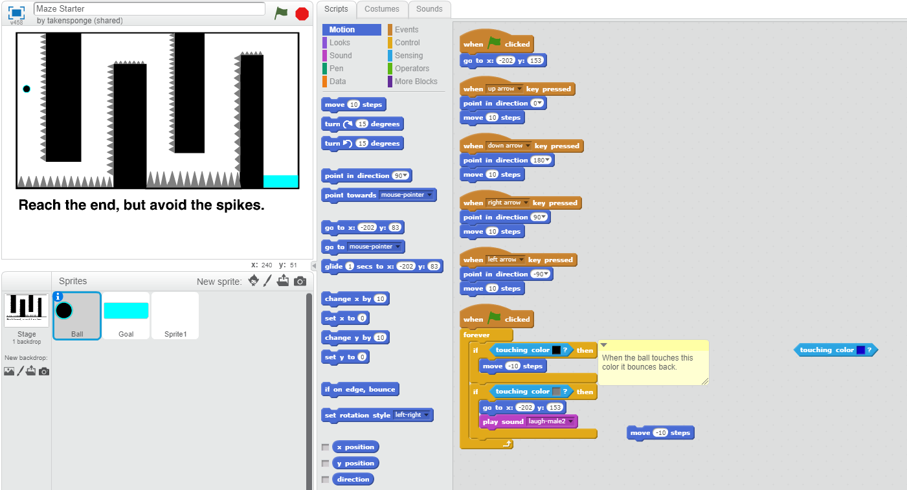
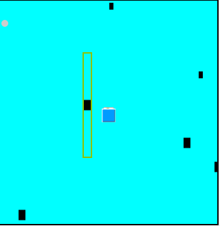
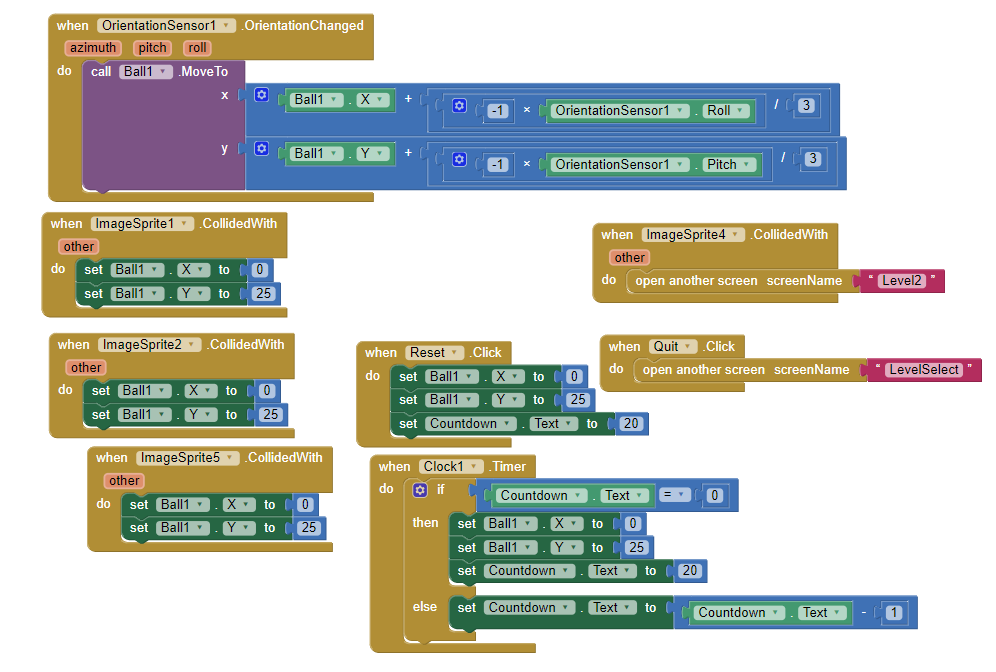
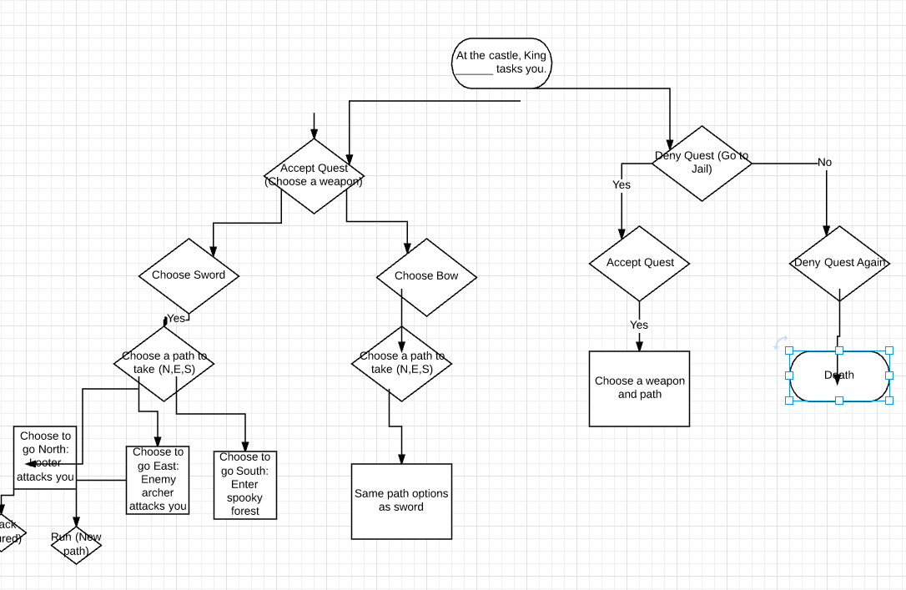
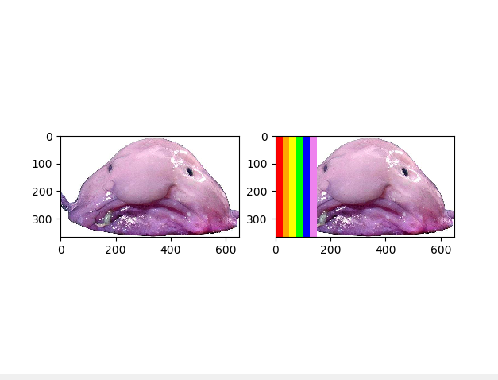
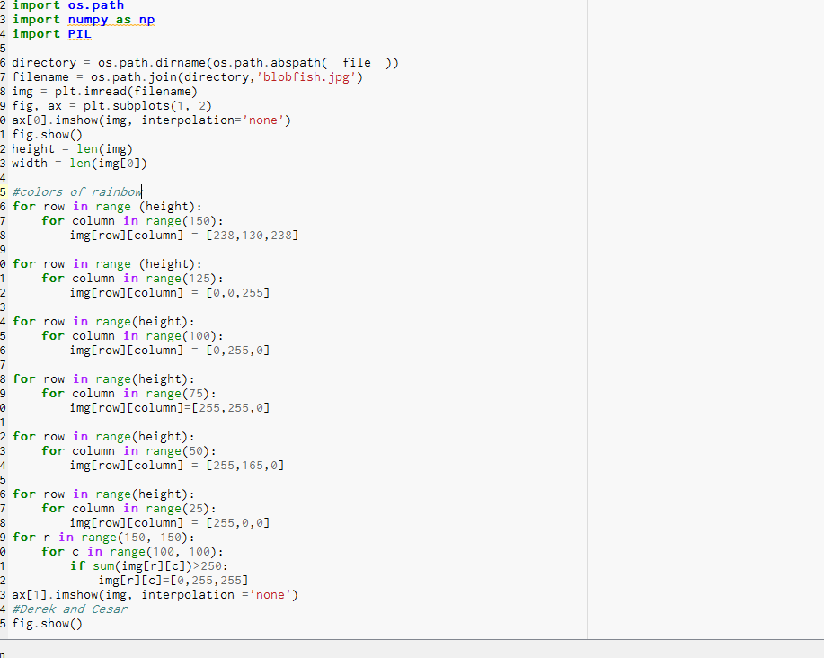

Home
Portfolio
About Me
My partner Haytham and I created this game on Scratch. We call this game Maze Starter, because it is our first attempt at creating a game using Scratch.
The player controls the ball with the arrow keys and must navigate through a hazardous map layout to reach the end and win!

Using App Inventor, my partner Yew Mun and I created a game called Tilt Maze. The goal of this game is to control a ball through a series of 4 levels by using a mobile device.
The player must tilt their device in order to navigate the ball around the deadly walls that set you back. We integrated a countdown timer in order to increase the difficulty of the levels as the player progresses.
Although we spent roughly about a week to create the game, there are feautures that we would like to add on in the future!


If you would like to [download](http://www.mediafire.com/file/b28obo46dcai21t/TiltMaze.aia) our game, free feel to do so!
Here you can view our TiltMaze game by clicking on this screenshot:
My partner Dan and I crated an interactive game using Python coding! Here is the image to our LucidChart that basically summarizes the plot and choices the player can make throughtout the game.

In this project, my partner Derek and I altered a few images using the Canopy application.
We altered the images in creative ways using simple lines of code. Here is one example of an altered image, where a fish is looking at a rainbow.
Below is the code that was used to create the new image.

